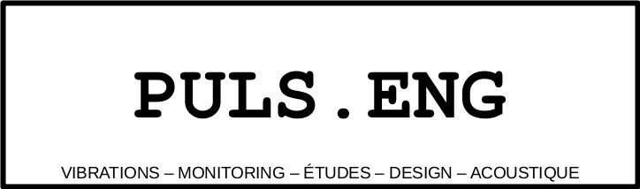

ACOUSTIQUE ET VIBRATIONS ENVIRONNEMENTALES
Bruit aérien ou solidien. Vibrations. Aucun lieu n'est complètement exempt de ces facteurs environnementaux, donc comprendre comment ces perturbations affectent votre site peut vous éviter des problèmes et des coûts inattendus.
Grâce à notre expertise en acoustique et vibrations, PULS.ENG fournit des études de site, des analyses et des évaluations, des stratégies de remédiation et une surveillance pour vous fournir des données complètes et détaillées de votre laboratoire afin que vous puissiez prendre des décisions éclairées. PULS.ENG est particulièrement bien informé des exigences liées aux industries des semi-conducteurs, de la microscopie et des instruments d'analyse - où tout écart par rapport à l'environnement de fonctionnement optimal peut diminuer la performance des instruments.
Nous travaillons avec des architectes, des entrepreneurs en construction et des ingénieurs qui construisent des centres de recherche, des laboratoires et des installations de fabrication. Nous amener tôt pour évaluer les chantiers et fournir des conseils en conception garantit que les meilleures pratiques de contrôle des interférences environnementales peuvent être prises en compte lors de la conception architecturale et de la construction du bâtiment. Nous travaillons avec les responsables et directeurs de laboratoire pour identifier les sources de problèmes qui dégradent les performances d'un microscope électronique ou d'autres instruments d'analyse. Et nous fournissons les données les plus complètes détaillant les performances de l'espace afin que vous sachiez ce que vous devrez faire pour préparer votre pièce lorsque vous souhaitez ajouter de nouveaux outils. PULS.ENG se concentre sur les données, pas sur les produits, vous êtes donc assuré d'évaluations et de recommandations impartiales et précises du site.
CONCEPTION DE LABORATOIRE
La conception du laboratoire implique des considérations spécifiques pour la construction des bâtiments, l'équipement d'imagerie des installations et la disposition des outils. Il implique la modélisation acoustique et l'analyse des vibrations pour éclairer la disposition des pièces, la conception mécanique et les matériaux de construction. Chez PULS.ENG, nos services de conception vous aident à créer un laboratoire ou un centre de fabrication de premier ordre. Notre équipe d'experts vous conseille sur les méthodes pour répondre aux spécifications de projet critiques pour votre équipement. Nous partagerons notre expertise liée aux vibrations et aux bruits acoustiques. Ces facteurs peuvent souvent être déroutants et difficiles à comprendre. Nous disposons de l'équipement et de l'expertise nécessaires pour interpréter les spécifications uniques pour une large gamme d'outils d'analyse et de processus. À partir de là, nous fournissons des recommandations de conception spécifiques pour la construction de bâtiments, la disposition des outils et les recommandations d'équipement des installations. Nous formulons également des recommandations pour des équipements tiers, tels que des systèmes d'isolation active, afin de fournir une correction localisée dans l'espace.
INGÉNIERIE DES PRODUITS
La conception d’un produit mêlant électronique, acoustique et transducteurs vibratoires demande des études particulières pour satisfaire aux conditions d’usages et de qualité des utilisateurs. L’équipe de PULS.ENG vous accompagne à chaque étape de conception : étude du besoin, preuve de concept, industrialisation. Nous réalisation des essais et des études théoriques pour vous guider dans la conception acoustique et vibratoire. Le choix des transducteurs et des capteurs et l’intégration de ces derniers dans votre maquette puis produit est une étape importante à laquelle nous vous accompagnons.
CONTACT
Une entreprise basée à La Tronche, Isère, Grenoble, Rhône Alpes, France